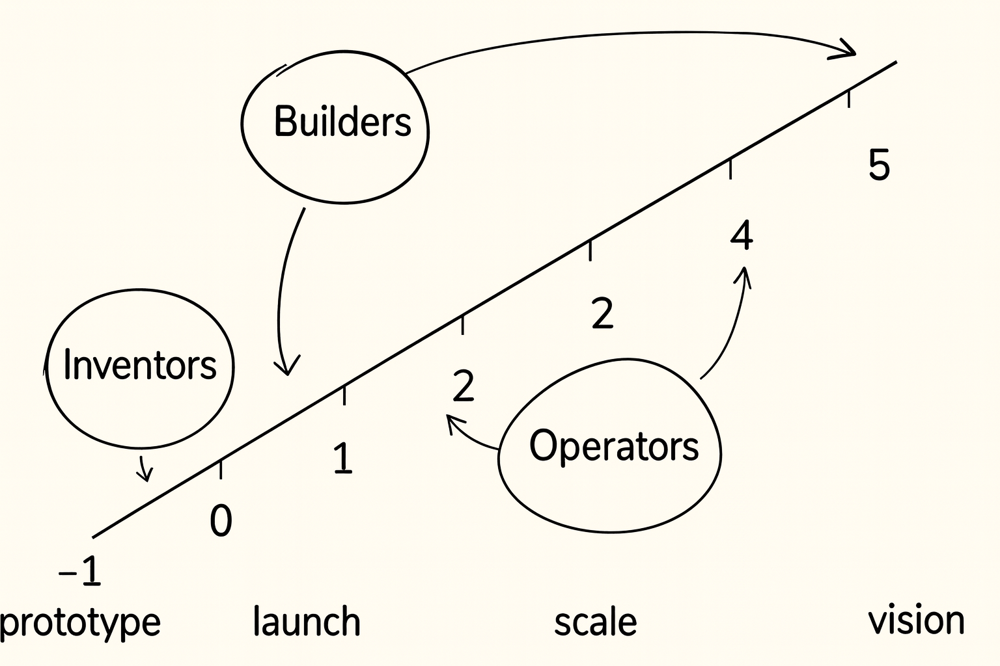

At Maple VC, we don't just invest early. We invest first.
That means backing founders before there's traction, before the market agrees, before the pitch is refined. When data is limited, you need a different way to assess potential.
Over the past decade of writing first checks, we've developed one: the Talent Framework — a model for evaluating early-stage teams based not on credentials or traction, but on team composition.
Which number are you?
Take the 3-minute quiz built on this framework.
The Founding Team Pattern We Kept Seeing
Across the best companies — those that scaled sustainably, recruited top talent, and iterated faster than the rest — we kept noticing the same pattern at the founding level.
Not in job titles. In mindset.
Each strong early-stage team seemed to combine three core archetypes:
Future-facing, idea-driven, and energized by possibility. Inventors see around corners, spot emerging trends before others, and challenge conventional wisdom. They are often the source of breakthrough insights, novel technologies, or entirely new ways of thinking. Their superpower is imagining what doesn't yet exist and inspiring others to believe in it.
Product-first, reality-oriented, and obsessed with turning ideas into tangible progress. Builders bridge the gap between vision and execution, transforming concepts into products, companies, and movements. They have a unique ability to make the future feel inevitable, rallying talent, customers, and investors around a compelling vision. Builders are often the founders who emerge as CEOs because they can both imagine what could be and relentlessly drive it into existence.
Structure-driven, scale-minded, and focused on execution. Operators bring order to complexity, designing the systems, processes, and teams that allow a company to grow beyond its founders. They excel at turning early momentum into repeatable performance, creating operational rigor, accountability, and organizational leverage. Their superpower is transforming ambitious visions into durable, high-performing organizations capable of sustained growth.

This trio shows up in some of the most iconic teams:
Over time, we realized this wasn't just a pattern. It was a framework.
And in almost every case, the Builder came first. The Builder is the catalyst that enables the other two archetypes to emerge. In practice, it rarely works the other way around — you almost never see all three archetypes come together unless the Builder is present first.
That said, you don't always need all three from day one. The most common and effective early-stage combinations pair the Builder (1) with either the Inventor (0) or the Operator (2). As the company grows, the third archetype can be added later.
0s, 1s, and 2s: A New Lens on Founder Risk
Each archetype not only brings a different strength — but a different approach to how they manage uncertainty. One way we interpret this is through how each one sees risk:
- Inventors (0s) manage future risk. They think long-term: "Will the market still care in five years?" Their risk profile is expansive and speculative.
- Operators (2s) manage present risk. They think in processes, cash flow, and execution. They worry about what's breaking right now.
- Builders (1s) operate in the near-term future. They see what's just about to matter. They aren't frozen by abstract questions or stuck fixing today — they're already moving toward next.
The best early-stage teams blend all three, giving the company range across time horizons and decisions.
But the archetype we prioritize most? It's almost always the Builder.
Why Builders Are the Most Underestimated — and Most Important
When investors evaluate early-stage teams, they often over-index on what is easiest to underwrite.
Inventors are compelling because they are legible. They are the technical founders who can build the product themselves and often possess deep domain expertise. Their credibility is easy to understand: they know the problem, they know the technology, and they can explain why they are uniquely qualified to solve it.
Operators are equally straightforward. They bring structure, execution, and a clear roadmap for how a company goes from one stage to the next. Their resumes, experiences, and accomplishments create a logical narrative that investors can quickly assess.
Builders are different. Builders are often the hardest archetype to spot because their backgrounds rarely make obvious sense. Their stories are nonlinear. Their credentials don't always match the problem they're tackling. In many cases, they appear underqualified on paper.
Why would anyone have believed Elon Musk could build rockets without ever working at a rocket company? Why would investors have trusted the Collison brothers to build financial infrastructure without backgrounds in finance? Why would Travis Kalanick have been the person to build a transportation and logistics company? Time and again, the founders who reshape industries are working on problems they have no obvious business solving. They lack the traditional credentials, domain expertise, or resume signals that investors are trained to look for.
As a result, Builders are frequently overlooked. They may not present as polished. Their pitches can be messy. Their backgrounds can be difficult to categorize.
But in our experience, the Builder is often the most important signal of long-term potential. While Inventors and Operators excel at executing known paths, Builders create entirely new ones. Here's why.
1. Builders translate ideas into motion.
They are the ones prototyping, testing, and iterating — not theorizing. At the earliest stage, there is rarely much to optimize. What matters is the speed at which a founder can learn, adapt, and convert insight into action. This is what makes Builders unique. They are often working on problems they have no prior experience solving. They don't have the luxury of relying on years of domain expertise or established playbooks. Instead, they must learn an industry, identify what matters, discard what doesn't, and make decisions in real time.
As a result, Builders tend to have the steepest learning curves of any founder archetype. Their superpower isn't what they already know — it's how quickly they can absorb new information, synthesize it, and turn it into momentum. When evaluating Builders, we pay less attention to what they know today and more attention to the slope of their learning. The best Builders consistently compress years of knowledge into months and make the impossible feel inevitable long before anyone else can see it.
Take Clay. When we invested, we didn't actually know who was the Builder and who was the Inventor between co-founders Kareem Amin and Nicolae Rusan — only that a pure Operator wasn't part of the founding team yet. What we noticed instead was the dynamic between them: one had more ideas than he could contain; the other kept orienting the company toward whatever was actually working. Over time, it became clear which was which. Nicolae generated — idea after idea, more than any one company could hold. Kareem oriented — he pointed the team toward the signal that was real: sales teams wanted what they'd built more than anyone else did. That instinct to orient around what the market was telling them, rather than toward the next idea, is what made Kareem the Builder.

2. Builders attract complementary talent.
We've seen this pattern repeatedly: when a Builder is present, Inventors and Operators tend to follow.
The reason is simple: Builders create gravity. Through relentless learning, building, and iteration, they turn an idea into something tangible. That momentum attracts talent. One of the strongest signals of a Builder is the caliber and range of people they can attract. We've seen Builders convince everyone from former bankers and consultants to world-class scientists and engineers to join them on a mission that, on paper, they have no obvious business pursuing.
Take Aalo. When we first met founder Matt Loszak, he had just exited an HR tech company and was starting a nuclear energy company. The obvious question was: why should this person be building a nuclear company? The signal wasn't his background. It was the speed of his learning. He immersed himself in the space, met with hundreds of technologists, and developed enough conviction and credibility to recruit top nuclear talent, including his co-founder Yasir.

That's why we believe Builders come first. They create the momentum that attracts the Inventors and Operators who follow.
3. Builders are often miscategorized.
Many early-stage Builders don't fit neatly into a category. They aren't always the obvious technical founder, nor are they necessarily the stereotypical visionary founder. Their backgrounds are often nonlinear, making them difficult to evaluate through traditional pattern matching.
This is precisely why they're so easy to overlook. Most investors are trained to underwrite credentials, experience, and familiar narratives. Builders rarely offer any of those. Instead, they present a collection of signals that don't quite add up — until they do.
We saw this with Kevin at Stadium Live. His path was distinctly non-linear, and his insight — sharpened by the consumer nature of what he was building — was subtle, not the kind that survives a pitch deck bullet point. When we asked around before investing, people who'd worked alongside him, including at Drop, struggled to describe what he actually was. That difficulty wasn't a warning sign. It was the signal itself.

What they do have is an unusual ability to move from 0 to 1. They take initiative without waiting for permission, learn at extraordinary speed, and turn ambiguity into momentum. More often than not, that ability is a stronger predictor of company creation than background, network, or pitch quality.
At Maple, we've always been drawn to founders who don't fit neatly into a bucket. Perhaps that's because neither do we. We've learned that the most exceptional founders often look unconventional before they look inevitable.
While Operators excel at executing against a known plan, Builders are the ones who uncover the insight that creates the plan in the first place. Through rapid learning, experimentation, and an obsession with understanding what others miss, they develop a unique point of view about how the world is changing.
That insight becomes the foundation for everything that follows. It attracts talent. It shapes the product. It defines the wedge into the market.
Uber wasn't simply a transportation company — it was the insight that the path to a global logistics network began with black cars. Amazon wasn't just building the everything store — it started with the insight that books were the ideal entry point. Clay wasn't merely bringing the power of programming to everyone — it began with the insight that sales teams would be the first to adopt it.
The best Builders don't just move quickly. They see something others don't. Their ability to uncover and act on that insight is what creates momentum, attracts exceptional people, and ultimately turns ambitious visions into enduring companies.
Without that insight, there may be activity. But there is rarely a company.
This is why we prioritize Builders in our Talent Framework. They may not be the most polished, but they're often the most important.
What This Means for Founders
If you're:
- Prototyping while others are pitching
- Building toward a vision that doesn't have language yet
- Already attracting people to your momentum
You're likely a Builder.
And in our view, that's the best possible starting point for a founding team. Because Builders don't wait for permission. They generate belief through action.
One caveat: none of this is fixed. The same person can be a 2 in one context and a 1 in another — it depends entirely on what's being built and what the moment calls for. The trick isn't figuring out which number you "are." It's finding the context where you're a 1.
What This Means for Us
At Maple VC, our Talent Framework helps us evaluate teams when data is limited and nothing is obvious yet.
We don't just look at ideas. We look at who's in the room — and how they work together. When we see a Builder at the center, with complementary minds around them, we pay attention.
Because while many investors follow polish, we back Builders — before the world catches up.
So — which number are you?
0, 1, or 2? Find out in three minutes.
Leave a comment
Thanks for your comment — we'll review it shortly.